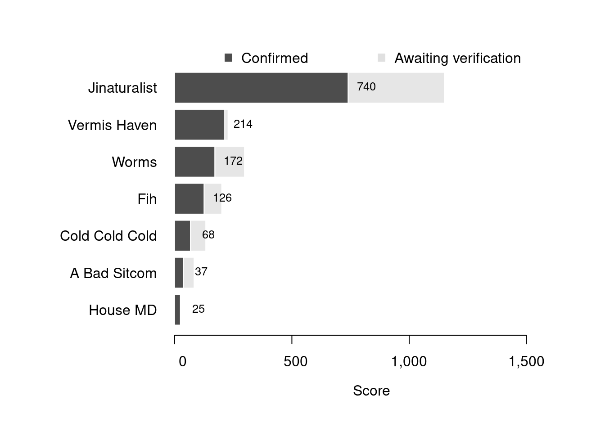

Content
You can view all the wildlife recorded at this event on iNaturalist.


| Records | 219 |
| Species | 87 |
| Verified species | 67 |
| Observers | 12 |
| Potential score | 1,815 |
| Confirmed score | 1,096 |
| Top verified species | Aonides oxycephala |
| Top species rarity score | 100 |
| Registered participants | 18 |
| Children attending | 1 |
Congratulations to Jinaturalist for taking the gold medal in this BioBlitz Battle! And well done to everyone for a great game and some fantastic wildlife finds.
| Team | Records | Potential Score | Confirmed Score |
|---|---|---|---|
| Jinaturalist | 149 | 1150 | 740 |
| Vermis Haven | 29 | 228 | 214 |
| Worms | 5 | 298 | 172 |
| Fih | 37 | 201 | 126 |
| Cold Cold Cold | 11 | 133 | 68 |
| A Bad Sitcom | 14 | 83 | 37 |
| House MD | 2 | 25 | 25 |

| Participant | Records | Potential Score | Confirmed Score |
|---|---|---|---|
| Isaac Mawer | 34 | 488 | 439 |
| Will | 56 | 646 | 286 |
| Henry Bwalya | 29 | 228 | 214 |
| Nathan Jackson | 5 | 298 | 172 |
| Harrison Usher | 9 | 221 | 162 |
| Aaliyah🌷 | 18 | 139 | 139 |
| kiatsea | 23 | 147 | 109 |
| Esther S E | 19 | 116 | 94 |
| nici1307 | 14 | 113 | 91 |
| rea_74 | 13 | 209 | 80 |
| gwenelis | 11 | 133 | 68 |
| out_n_about_kenzie | 9 | 48 | 33 |
| am31ia_hola | 2 | 25 | 25 |
| evefraj | 5 | 35 | 4 |
A total of 5 species have a verified rarity score of 35 or higher.


Community verified records only
Click any image to view the taxon on iNaturalist.
| Name | Rarity Score | |
|---|---|---|

|
Aonides oxycephala | 100 |

|
Psamathe fusca | 53 |

|
Arctic Hiatella - Hiatella arctica | 42 |

|
Flabby bristle-worm - Flabelligera affinis | 38 |

|
Truncate Softshell Clam - Mya truncata | 35 |

|
Hooded Shrimp - Athanas nitescens | 33 |

|
garland hydroid - Dynamena pumila | 28 |

|
Horned wrack - Fucus ceranoides | 25 |

|
Große Pfeffermuschel - Scrobicularia plana | 25 |

|
Leach’s spider crab - Inachus phalangium | 22 |

|
Anurida | 20 |

|
Angular Seaslug - Okenia nodosa | 20 |

|
Common Goby - Pomatoschistus microps | 20 |

|
Northern Cowrie - Trivia arctica | 20 |

|
Rock Goby - Gobius paganellus | 19 |

|
Nereidinae | 19 |

|
Tompot Blenny - Parablennius gattorugine | 19 |

|
kelp lace bryozoan - Membranipora membranacea | 18 |

|
European Sand Hopper - Talitrus saltator | 18 |

|
Otter shell - Lutraria lutraria | 17 |

|
Coil Worm - Spirorbis spirorbis | 17 |

|
European Cowrie - Trivia monacha | 17 |

|
Fünfbärtelige Seequappe - Ciliata mustela | 16 |

|
Rock Gunnel - Pholis gunnellus | 16 |

|
Long-clawed Porcelain Crab - Pisidia longicornis | 16 |

|
Warzige Sternschnecke - Archidoris pseudoargus | 15 |

|
Bread-crumb Sponge - Halichondria panicea | 15 |

|
Prickly Cockle - Acanthocardia | 14 |

|
Sand Mason Worm - Lanice conchilega | 14 |

|
Great Scallop - Pecten maximus | 14 |

|
Dwarf Brittle Star - Amphipholis squamata | 13 |

|
Blue-rayed Limpet - Patella pellucida | 13 |

|
Strand-Seeigel - Psammechinus miliaris | 13 |

|
Netted Dogwhelk - Tritia reticulata | 13 |

|
Star Tunicate - Botryllus schlosseri | 12 |

|
crumb-of-bread sponge - Hymeniacidon perlevis | 12 |

|
Oarweed - Laminaria digitata | 12 |

|
Polycera | 12 |

|
Pacific Oyster - Magallana gigas | 11 |

|
Common Brittle Star - Ophiothrix fragilis | 11 |

|
Native oyster - Ostrea edulis | 11 |

|
Grey Topshell - Steromphala cineraria | 11 |

|
Rändel-Käferschnecke - Lepidochitona cinerea | 10 |

|
Channelled Wrack - Pelvetia canaliculata | 10 |

|
Lined Top Shell - Phorcus lineatus | 10 |

|
Broadleaf Sea Lettuce - Ulva lactuca | 10 |

|
Common Sea Star - Asterias rubens | 9 |

|
Cushion Star - Asterina gibbosa | 9 |

|
Common Cockle - Cerastoderma edule | 9 |

|
Blue Mussel - Mytilus edulis | 9 |

|
Velvet Swimming Crab - Necora puber | 9 |

|
Common Hermit Crab - Pagurus bernhardus | 9 |

|
Dustbin-lid Jelly - Rhizostoma octopus | 9 |

|
Genabelte Kreiselschnecke - Steromphala umbilicalis | 9 |

|
Common Whelk - Buccinum undatum | 8 |

|
Edible Crab - Cancer pagurus | 8 |

|
Saw Wrack - Fucus serratus | 8 |

|
bladder wrack - Fucus vesiculosus | 8 |

|
Schan - Lipophrys pholis | 8 |

|
Common Periwinkle - Littorina littorea | 8 |

|
Atlantic Dogwhelk - Nucella lapillus | 8 |

|
Gewöhnliche Napfschnecke - Patella vulgata | 8 |

|
Rhodymeniophycidae | 8 |

|
Gemeine Strandkrabbe - Carcinus maenas | 7 |

|
Beech - Fagus sylvatica | 7 |

|
Eurasian Curlew - Numenius arquata | 7 |

|
Crows, Jays, and Magpies - Corvidae | 2 |